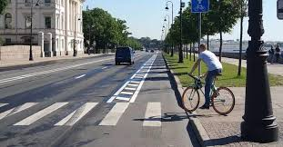

📅 11 Мая 2026 года
Сегодня прошел чемпионат мира на шоссейных велосипедахВчера в Италии завершился чемпионат мира по шоссейному велоспорту 2026 года. В соревнованиях приняли участие лучшие гонщики со всего мира, и борьба за титул была невероятно напряженной.
Читать далее →
📅 1 Мая 2026 года
С наступлением тепла начался сезон велосипедных кражВ Муравленко начался велосезон. Как правило, в этот период растёт и число краж двухколёсного транспорта. Чтобы предупредить подобные преступления, сотрудники полиции усилили профилактическую работу.
Читать далее →
📅 20 Апреля 2026 года
На тротуарах в Челябинске появится разметка для велосипедистовИнициатива появилась благодаря сотрудничеству администрации с операторами средств индивидуальной мобильности — им предложили профинансировать реализацию велостратегии. Главная цель нововведения — разделить пешеходные и велосипедные потоки, чтобы снизить риск травматичных столкновений. Особенно это актуально с учетом популярности электросамокатов: их пользователи развивают высокую скорость, а сами устройства достаточно тяжелые.
Читать далее →
📅 5 Февраля 2026 года
Фестиваль в пустынеВчера в пустыне Китая прошел уникальный велосипедный фестиваль, который собрал любителей экстремальных видов спорта со всего мира. Участники соревновались в различных дисциплинах, включая гонки по пескам и трюки на BMX.
Читать далее →